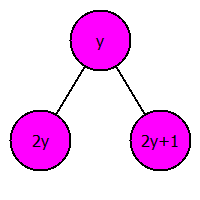

Дерево отрезков
1. Постановка задачи
Рассмотрим следующую задачу. Дано $n$ ящиков, пронумерованных числами от $1$ до $n$, в каждом из которых лежит несколько шариков. Известно, что $n$ достаточно велико. Нам нужно уметь быстро выполнять следующие операции:
- $add(c, w)$ - изменить количество шариков в ящике $c$, прибавив к нему $w$ шариков ($w$ может быть отрицательным);
- $sum(a, b)$ - посчитать количество шариков в нескольких ящиках, расположенных по порядку с номерами от $a$ до $b$, то есть на отрезке $[a,b]$.
Мы можем просто завести массив, в котором будем хранить число шариков в ящиках. Почему эта идея может оказаться неоптимальной? При изменении числа шариков в ящике мы меняем значение элемента массива с номером $c$, что выполняется за $O(1)$. Но чтобы посчитать сумму в нескольких идущих подряд ящиках, нам нужно будет сложить $b - a + 1$ чисел. Поскольку длина отрезка может быть почти $n$, то выполняется порядка $n$ сложений, то есть операция ${\it sum}$ выполняется за $O(n)$. При достаточно большом числе запросов суммы на отрезке решение задачи перебором является далеко не лучшим.
2. Корневая оптимизация

Первая идея, которая обычно приходит в голову, это разделить $n$ ящиков на $x$ групп таким образом, что первые несколько ящиков по порядку попадают в первую группу, следующие - во вторую, и так далее. Далее заведем дополнительный массив из $x$ элементов, где будет храниться количество шариков в каждой группе. Тогда при выполнении операции ${\it add}$ нам нужно будет выполнить два действия: изменить значение в соответствующей группе и в самом элементе. Зато операция ${\it sum}$ потребует меньших затрат: нужно сложить элементы группы, которой принадлежит число $a$ (обозначим ее $A$), начиная с элемента с номером $a$ и кончая последним, элементы группы, которой принадлежит число $b$ (обозначим ее $B$), начиная с первого и кончая элементом с номером $b$, что требует временных затрат порядка $O(\frac{n}{x})$ и прибавить к ним суммы элементов в группах, начиная с группы, следующей за $A$ и заканчивая группой, расположенной перед группой $B$, что требует временных затрат порядка $O(x)$. Всего нужно выполнить примерно $\frac{n}{x} + x$ операций. Если мы подберем число $x$ оптимальным образом, то эта идея называется корневой оптимизацией. Чтобы ответить на вопрос, какое $x$ является наилучшим, нужно устремить к минимуму выражение $\frac{n}{x} + x$. Возьмем от него производную по $x$ и приравняем ее к нулю: $-\frac{n}{x^{2}}+1=0$. Отсюда получаем $x=\sqrt{n}$. Таким образом, оптимальное количество групп, на которые нужно разбить ящики: $[\sqrt{n}]$. Мы добились оценки времени выполнения операции ${\it sum}$ $O(\sqrt{n})$, правда, увеличился расход по памяти, но всего лищь на $\sqrt{n}$ - число дополнительных ящиков для хранения сумм элементов в группах.
3. Дерево отрезков
Следующая мысль, которая приходит в голову, это то, что мы можем завести не один вспомогательный уровень, а много. Каждый уровень будет служить для уменьшения вычислений на уровне ниже. Для простоты реализации проще иметь одинаковое число возможных переходов на каждом уровне. Таким образом, мы приходим к дереву, из верхнего узла которого $x$ переходов, из каждого из получившихся $x$ узлов также $x$ переходов, и так далее. На самом нижнем уровне получается $x^{h}$ узлов, где $h$ - высота дерева, что должно быть равно $n$. Отсюда $h = \log_{x}n$.
Рисунок 1
Дальше нам нужно выяснить, какое $x$ является оптимальным. Теперь при выполнении операции ${\it sum}$, так же как и ${\it add}$, нужно выполнить $hx$ действий. Нам нужно минимизировать это выражение: $h * x\to\min$. Возьмем от него производную и приравняем ее к нулю: $(\log_{x}n * x)' = 0$. Получаем $x = e$. Таким образом, из каждого узла должно выходить $e$ веток. Ближайшее к $e$ целое число - это $3$. Однако, учитывая, что операции умножения и деления на $2$ на процессорах с двоичной арифметикой выполняются значительно быстрее, в качестве $x$ берут $2$, а не $3$.
3.1. Удобный способ хранения дерева отрезков
Обозначим за $N$ ближайшее сверху к $n$ целое число такое, что $N$ является степенью двойки. Тогда $N = 2^{h}$. Элементы массива, начиная с $1$ по $n$ образуют начало нижнего уровня дерева отрезков, оставшиеся нижние узлы дерева от $n + 1$ до $N$ заполняются нулями.
Перенумеруем узлы дерева так, как показано на рисунке и разместим значения, хранящиеся в узлах дерева, в массиве в соответствии с этой нумерацией. Сначала расположен самый верхний узел дерева, потом узлы второго сверху уровня слева направо, потом третьего слева направо, и так далее. В конце идут значения, данные изначально.
Тогда переход сверху вниз выполняется по следующей схеме:

, а снизу вверх так:

3.2. Сколько места занимает дерево отрезков?
Кроме массива длины $N$, нужно еще $N - 1$ дополнительных элементов, всего получается $2N - 1$. Причем удобно нумерацию начинать с $1$, чтобы проще вычислять переходы по приведенным схемам. Тогда в языках, где массив начинается с нуля (например, C++), пропадает нулевой элемент, затраты по памяти составляют $2N$.
3.3. Реализация
При реализации дерева отрезков можно написать операции add и sum двумя способами: циклом и рекурсией. Кроме того, можно идти по дереву отрезков вниз, а можно вверх. Итого, для каждой операции четыре возможных варианта.
3.3.1. Операция add
Чтобы выполнить операцию ${\it add}$, нужно просто пройти по дереву вверх как показано на рис. 5, увеличивая значение в каждом встреченном узле на $w$.
Реализация на C++ операции ${\it add}$ циклом, по дереву идем вверх
// Добавить, цикл, вверх
void add_up(int c, int w)
{
int i;
for(i = N - 1 + c; i != 0; i >>= 1)
tree[i] += w;
}
// Замечание: операция >>= 1 эквивалентна операции /= 2
3.3.2. Операция sum
Заведем переменную $res$, в которой будем хранить текущее значение суммы. Изначально стоим на нижнем уровне дерева, нужно посчитать сумму элементов от $a$ до $b$ включительно. Заметим, что для левой границы $a$, когда выполняем переход вверх, нужно прибавлять значение в узле дерева к $res$, когда $a$ - нечетное, после чего левую границу нужно сдвинуть на $1$ вправо. Для правой границы, соответственно, наоборот. На каком-то шаге левая граница становится больше правой и цикл заканчивается.
Реализация на C++ операции ${\it sum}$ циклом, по дереву идем вверх
// Сумма, цикл, вверх
int sum(int a, int b)
{
int res = 0;
for(a += N - 1, b += N - 1; a <= b; a >>= 1, b >>= 1)
{
if(a % 2 == 1)
{
res += tree[a];
a++;
}
if(b % 2 == 0)
{
res += tree[b];
b--;
}
}
return res;
}
Реализация на C++ операции ${\it add}$ рекурсией, по дереву идем ?
файл 3.cpp - где он?
Реализация на C++ операции ${\it sum}$ рекурсией, по дереву идем ?
файл 4.cpp - где он?
3.4. ?? Заголовок ??
Если мы задумаемся над следующим вопросом: при каких $n$ нам действительно выгодно применить дерево отрезков, а когда не стоит тратить время и усилия на его написание, когда лучше написать корневую оптимизацию или даже может оказаться, что оно работает медленнее перебора. С этой целью можно предложить такой эксперимент: написать дерево отрезков, корневую оптимизацию и перебор и запустить все три алгоритма при некоторых n, например, при $n = 5, 10, 10^2, 10^3, 10^4,\ldots, 10^{12}$, записывая время работы каждого в два массива, а потом сравнить, что получилось.
3.5. Стандартные ошибки при написании дерева отрезков
1) Обычно, когда рисуют дерево отрезков, никто не забывает, что нужно увеличить $n$ до ближайшей степени двойки, но во время реализации оставляют $n$ как есть, тесты из примеров такой код проходит, но на больших тестах получается неверный ответ.
2) Перед выполнением операции $add$ или $sum$ нужно не забыть прибавить к номеру элемента в исходном массиве $N-1$, чтобы получить номер элемента в дереве.